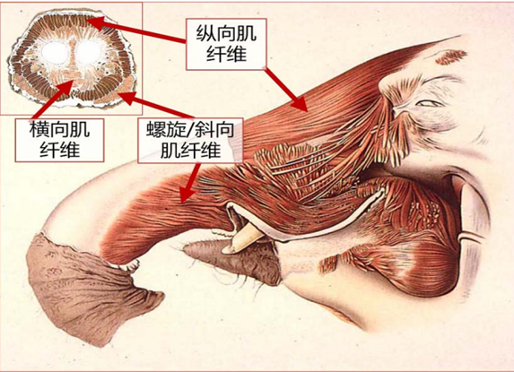
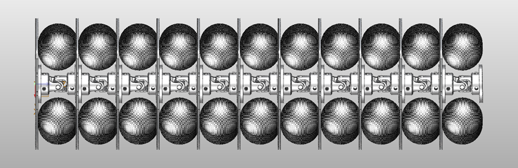
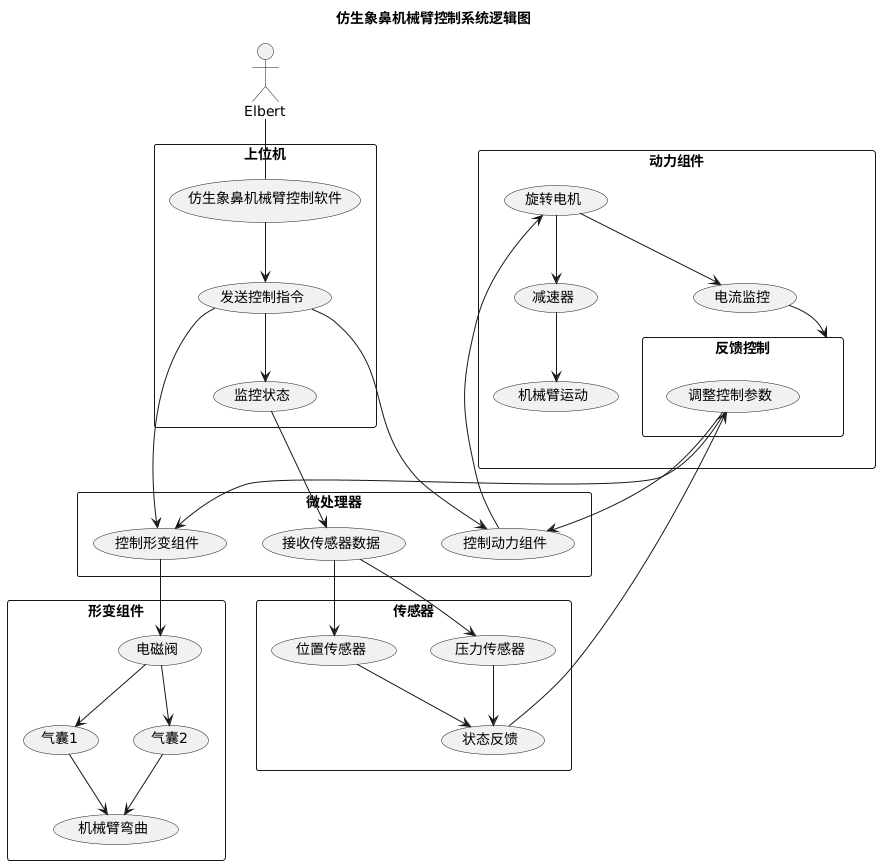
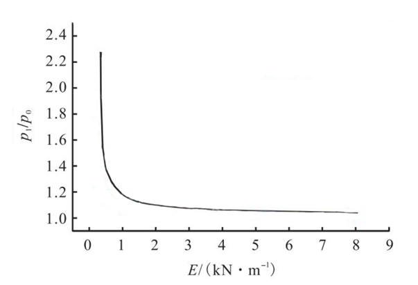

仿生象鼻机械臂
技术说明书
BIONIC TRUNK CONTINUUM ROBOT · TECHNICAL SPECIFICATION
TABLE OF CONTENTS
- 1 INTRODUCTION 3
- 1.1 Background 3
- 1.2 Objective 4
- 2 SYSTEM DESIGN 5
- 2.1 Skeleton Structure 5
- 2.2 Pneumatic System 7
- 2.3 Application Modules 8
- 3 PERFORMANCE ANALYSIS 9
- 3.1 Component Selection 9
- 3.2 Parameter Calculation 11
- 4 REFERENCES 14
INTRODUCTION
Background
在如今技术飞速发展的时代，自动化技术已经深入到人们的生活当中。仿生机械技术是机器人技术与生物力学相结合的新技术，这种技术可以代替人们去完成高危险工作、高精度操作以及人们无法进入的区域进行探索等等。因此，研究仿生机械技术具有着重要意义。
大象的长鼻子是一个功能发达的肌肉液压调节器（Muscular Hydrostat），其活动十分灵活，几乎可以进行无限自由度的移动。象鼻既能操纵如一片草一样的细小物体，又能携带重量超过 250 kg 的重物。除此之外，还有社交和感觉功能等等。

Objective
本作品聚焦于野生大象，以象鼻为仿生灵感，设计了一款多功能协作机械臂。作为一种连续型机械创新产品，利用特制气囊的弹性变形使柔性本体弯曲成光滑连续曲线而产生运动，与单自由度关节和刚性连杆构成的传统工业机器人不同，它能够形成柔顺的卷曲形状，实现 360° 的大弯曲效果，从而适应在多障碍物的复杂环境下工作。
SYSTEM DESIGN
Skeleton Structure
系统设计分为三大核心部分：
| DESIGN MODULES | |
|---|---|
| 2.1.1 | 仿生设计部分 — 以野生大象的象鼻为主体的仿生设计 |
| 2.1.2 | 技术功能模块 — 拓展模块可根据客制化需求进行调配 |
| 2.1.3 | 动力控制部分 — 气泵和电机是本系统的主要动力来源 |
该仿生象鼻结构是连续关节体的设计，由铝合金圆盘与定制万向节通过法兰盘连接，并且不同分段处的细节尺寸有所不同，以呈现气动结构上的不同功能作用与外观上的由粗至细的渐变效果。

| Part No. | Description | Qty. | Material |
|---|---|---|---|
| P-001 | 小关节（弯曲状态） | 4 | Aluminum Alloy |
| P-002 | 主干关节（未充气状态） | 3 | Aluminum Alloy |
| P-003 | 鼻根与前端（充气状态） | 2 | Aluminum Alloy |
| P-004 | 法兰盘连接件 | 9 | Stainless Steel |
| P-005 | 定制万向节 | 9 | Steel |
Pneumatic System
目前气动伺服控制主要采用电气比例阀和电磁开关阀。电气比例阀具有控制精度高、线性程度好等优点，但结构复杂、价格昂贵，难以普及。相反，电磁开关阀结构简单、价格低廉、使用方便，开关速度灵敏。因此，本作品使用成本较低的电磁开关阀代替电气比例阀来控制气囊，达到所需效果。

液体喷洒设计
为仿生出大象在日常中使用象鼻喷水的生物功能，本作品在下方空间增加了一个可以储水的蓄水池，使用水管与花洒头搭配，使得喷出的水能够呈现散状，从而模拟象鼻喷洒水液的功能。
Application Modules
本作品的象鼻鼻端可以安装定制的应用模块作为产品的功能拓展，安装不同功能的末端执行器，可在不同应用场景中完成相应工作。
| APPLICATION MODULES | |
|---|---|
| Module 01 | 图像传输模块 — 基于数字技术的图传系统可使该设备应用于复杂或狭窄环境下进行图像拍摄、传输、识别等功能 |
| Module 02 | 定制功能模块 — 可根据需求二次开发，更换鼻端模块实现不同工作 |
PERFORMANCE ANALYSIS
Component Selection
8路5V继电器
继电器具有高寿命、高可靠、成本低、体积小的优点。结合本作品所需的气路控制通道和功能，使用 8路5V继电器 来对本作品的充放气进行控制。
空气压缩机
所使用的气囊许用工作气压最大值约为 0.2 MPa。为保证所有气囊的连续使用要求，选用无油空气压缩机。使用方法：先给压缩机供电，等待储气罐充满高压空气后打开前端手动阀门进行充气。气囊在消耗气体过程中，储气罐压力下降到某一数值后，压缩机会自动给储气罐充气。
Type: Oil-free Air Compressor
微型电磁阀
电磁阀具有外漏堵绝、内漏易控、使用安全的优点。微型电磁阀本身结构简单、价格低，比起调节阀等其他种类执行器更易于安装维护。
| SOLENOID VALVE OPERATING STATES | |
|---|---|
| 通电状态 (Energized) | 1孔与2孔导通，3孔封堵 |
| 断电状态 (De-energized) | 1孔与3孔导通，2孔封堵 |
Parameter Calculation
气囊规格
所使用的气动肌肉在充气时气囊大小会有很大变化，因此需要计算气囊充气前后的大小变化，选择合适的气压值。选用了 3种不同规格 的气囊：
| PNEUMATIC ACTUATOR SPECIFICATIONS | ||
|---|---|---|
| Size | Dimension | Matched Disk |
| Type A | Ø30mm × 80mm | Ø100mm |
| Type B | Ø40mm × 100mm | Ø120mm |
| Type C | Ø55mm × 140mm | Ø130mm |
确保气囊侧向均匀受力，在实际受压时内部温度不变，满足理想气体状态方程：
即：初始充气压强 × 初始气囊体积 = 工作内部压强 × 气囊充气变形后体积。
压力-模量关系分析
气囊受到 2 片铝制合金圆盘的双向挤压。将骨架和气囊的数据带入模拟，计算了各阶段受力过程，模拟出 E 与 P₀、P₁ 的关系图（E 为拉伸模量，P₀ 为初始充气压强，P₁ 为工作内部压强）。

气囊静态模型分析
气囊的内部摩擦力和气压都会对伸长状态造成影响，精确的气囊数学模型很难建立。目前较为常见的模型有 Chou 模型 和 Tondu 模型。由于本作品的气囊实际结构可以直接测量，因此 Tondu 模型 更适合本作品的实际应用。
其中 r₀ 是气囊的半径，L₀ 是初始长度，L 是充气后长度，p 是内部气压。该公式表示了气囊的拉力与气压成正比，与长度成反比，与其收缩率成非线性关系。
电机选型
所使用的电机为交流减速电机。由电机铭牌可知，电机额定转速为 1400 rpm，额定转速降 Δn = 130 rpm，负载实际转矩 M = 0.5。那么，电机在实际转速 1500 rpm 时的电源频率计算方法如下：
Δnrated = 130 rpm
f = 50 Hz × (1500 + 130) / 1500 ≈ 54.3 Hz
REFERENCES
- WALKER I D. Continuous backbone "Continuum" robot manipulators[J]. ISRN Robotics, 2013, 2013(726506): 1-19.
- 徐凯, 刘欢. 多杆连续体机构: 构型与应用[J]. 机械工程学报, 2018, 54(13): 25-33.
- 张启航, 邵敏, 任树雄, 李源, 王晶. 仿象鼻气动连续体机器人的运动学建模与运动控制[J]. 西安交通大学学报, 2021, 55(08): 25-32.
- 徐嘉辉. 基于气动肌肉的柔性机械臂建模与控制研究[D]. 河南工业大学, 2020.